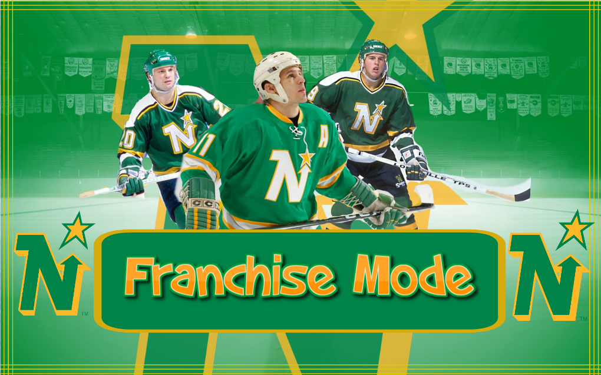
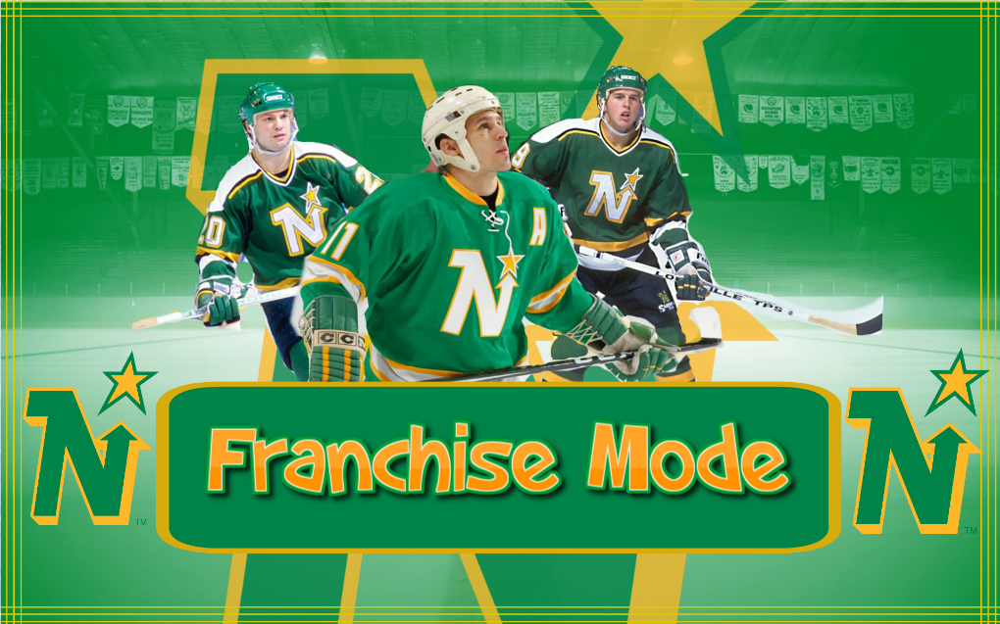

Graphic design has been one of my favourite aspects of the program I'm in so far. I really enjoy sitting down and expressing my creativity digitally. I'm not much of a free hand artist so designing digitally is an amazing alternative. I made all my thumbnails for my youtube video as well as designed my logo. Below are some of the creations I've made.


 

In my User Experience design course I was given a project where I had to re-design a website that was not visually apealing or lacking certain functional elements. The website I chose to re-design and the finished product are both showcased below.
Original Site

Re-designed site